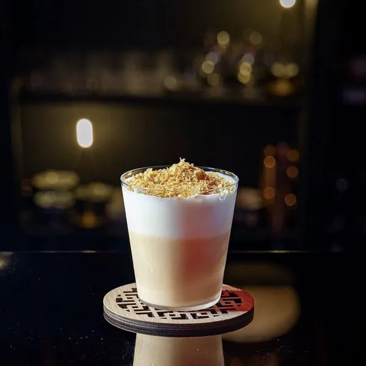
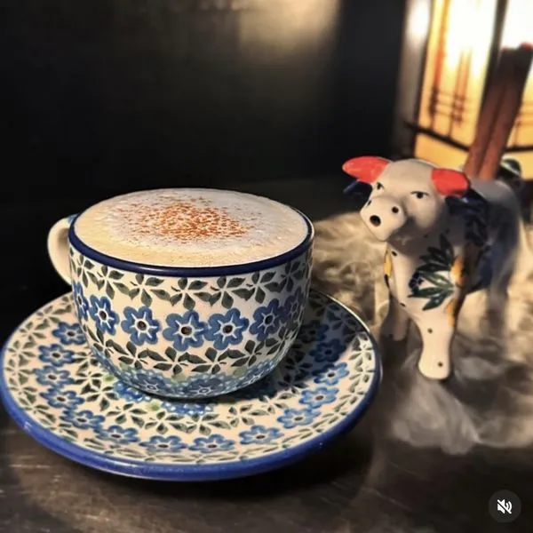
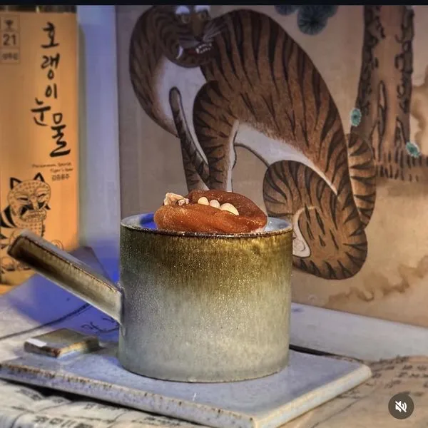
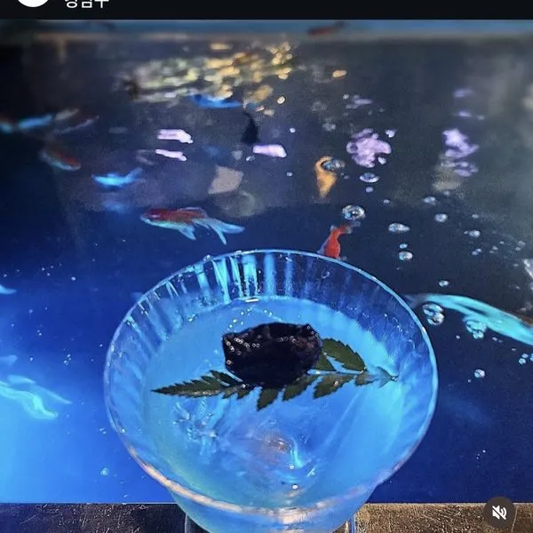
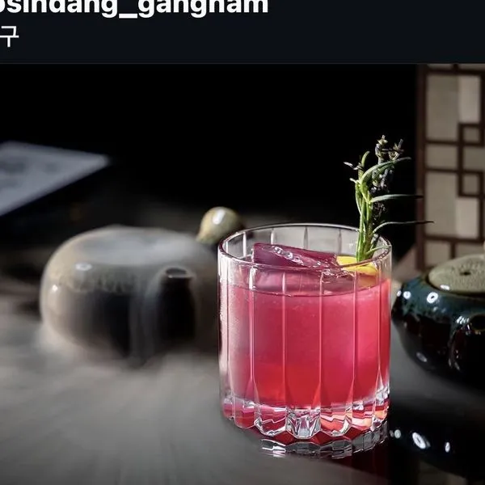
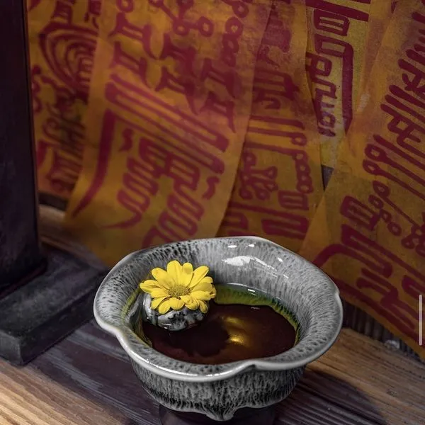
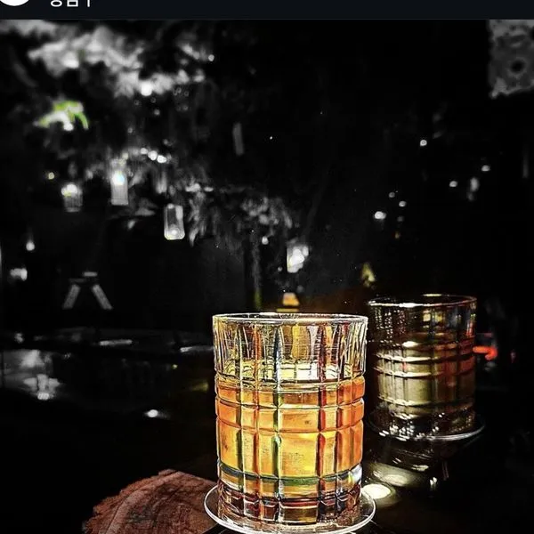
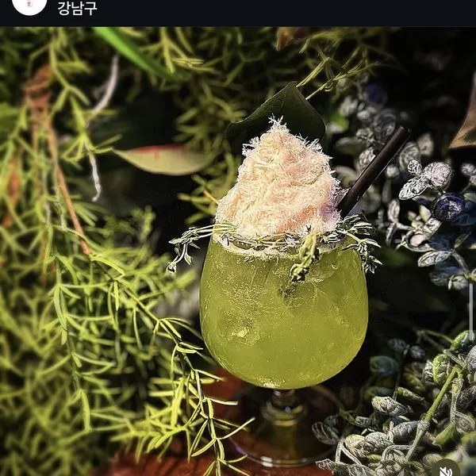
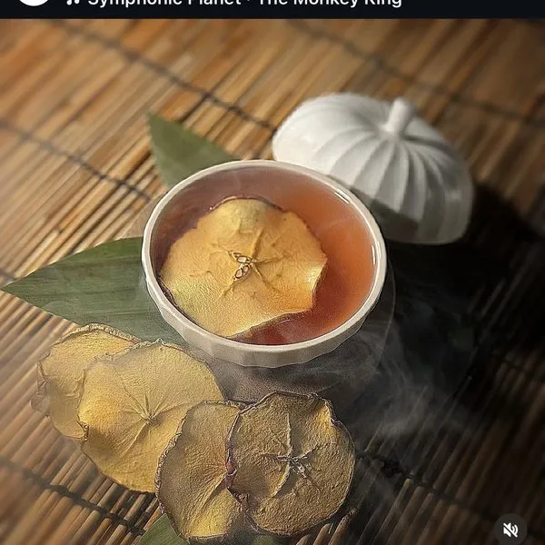
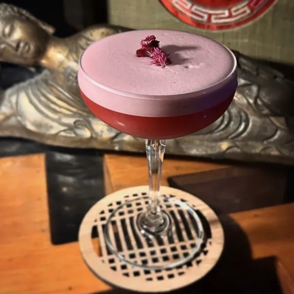
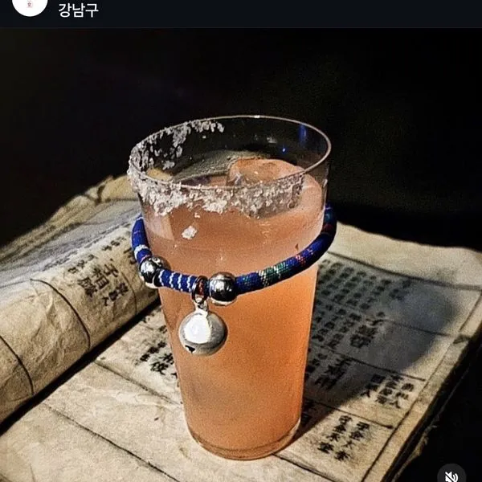
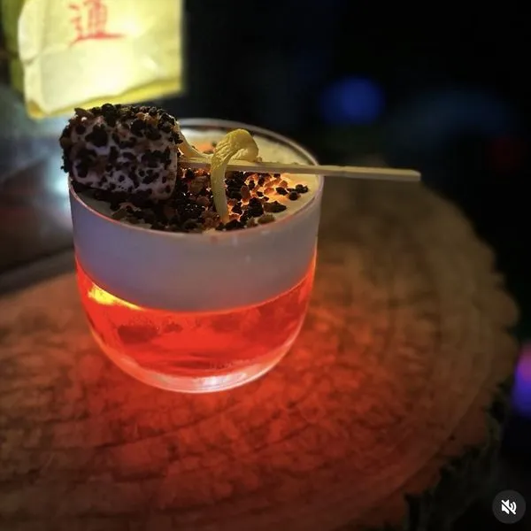
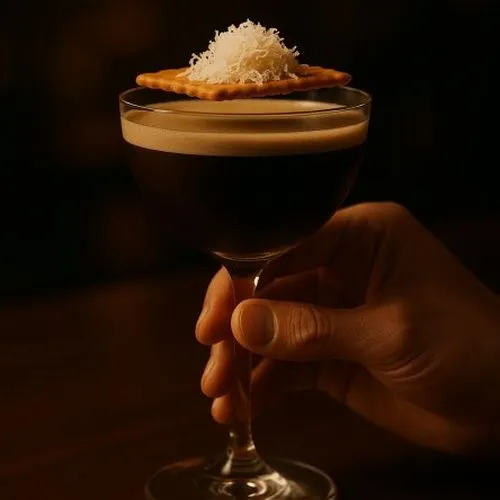
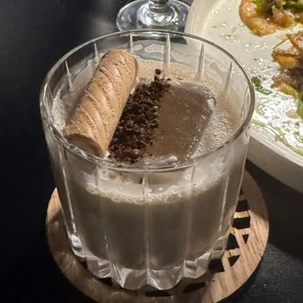
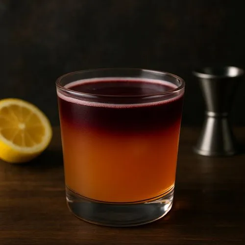
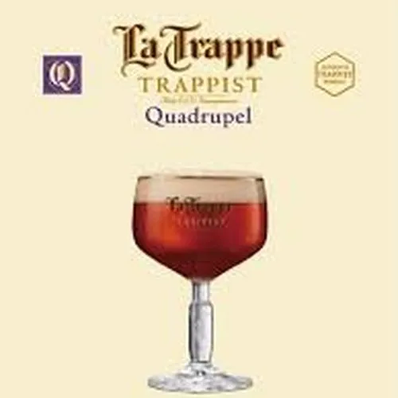
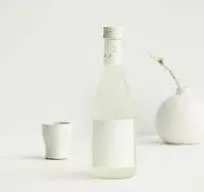
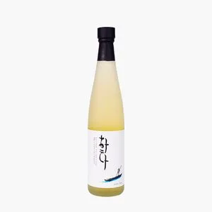
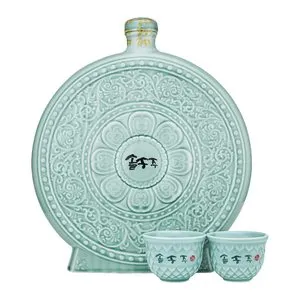
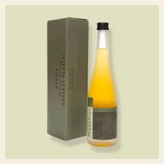
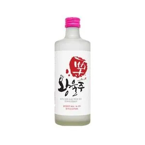
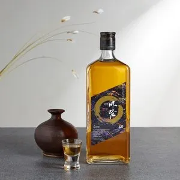
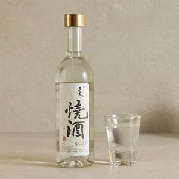
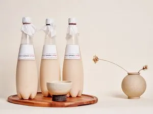
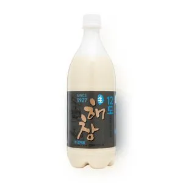
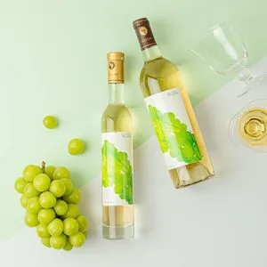
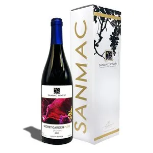
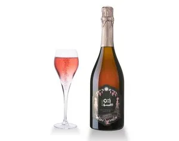
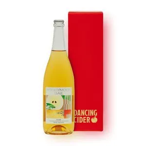
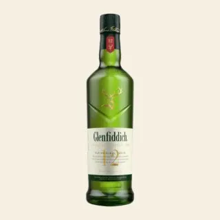
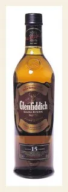
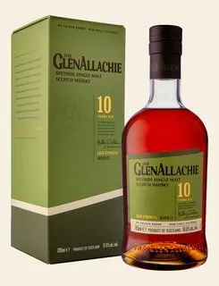
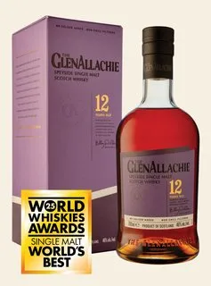
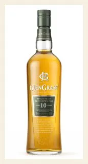
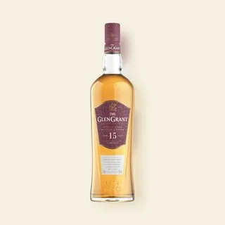
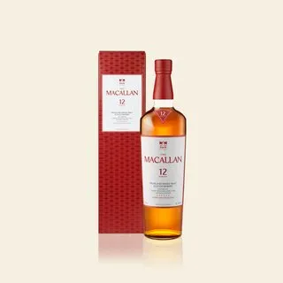
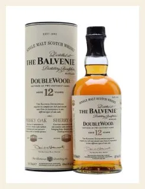
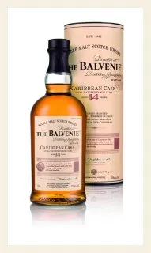
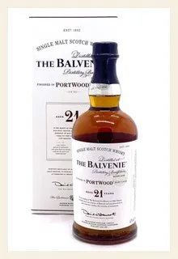
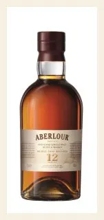
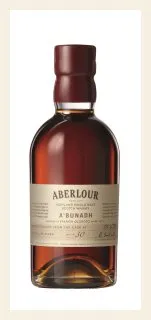
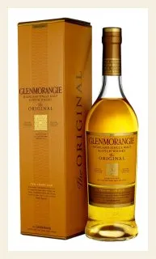
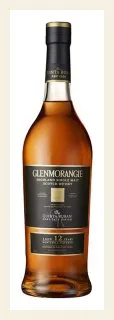
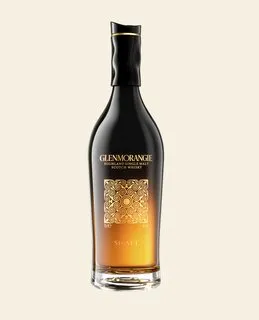
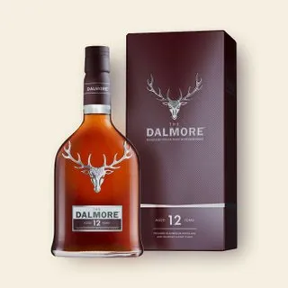
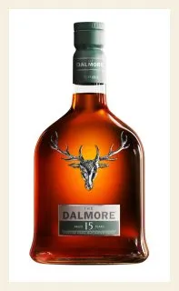
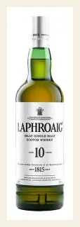
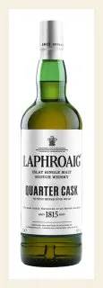
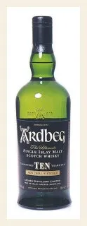
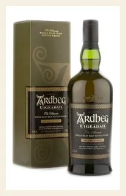
쥐가 치즈를 정말 좋아한다는 걸 모티브로 해서, 여기에 치즈 폼과 브라운 치즈를 올린 칵테일입니다.
그 밑에는 베일리스라는 크림 리큐르가 깔려있는데요, 이게 우유나 치즈를 만나면 좀 더 치즈케이크 맛처럼 변하는 성질이 있어서, 쥐가 좋아하는 치즈케이크 칵테일을 만들어드렸구요.
마지막으로 누룽지 에센스를 뿌려서 고소한 향을 더했습니다.
치즈 폼 때문에 깊이 드셔야 맛있게 드실 수 있습니다.
Mice love cheese, so I made this cocktail with cheese foam and brown cheese on top.
The base is Baileys — an Irish cream liqueur. When Baileys meets milk or cheese, it transforms into a cheesecake-like flavor, so I made a cheesecake cocktail that mice would love.
I finished it with nurungji (toasted rice) essence for a nutty aroma.
Because of the cheese foam, please drink it from deep down to fully enjoy the flavor.
소가 상징하는 게 우유이다 보니, 밀크티 컨셉으로 맛도 디자인도 밀크티처럼 만들어드리는 칵테일입니다.
시나몬 파우더랑 시나몬 스틱을 가니쉬로 드리고 있구요.
[시연] 여기 있는 소 모형에 드라이아이스가 있어서 뜨거운 물을 부으면 예쁘게 연기가 피어오르는데, 혹시 촬영 한번 하시겠어요?
Since cows symbolize milk, I designed this cocktail to look and taste like milk tea.
It's garnished with cinnamon powder and a cinnamon stick.
[Show] There's dry ice inside this cow figurine — when I pour hot water over it, beautiful smoke rises up. Would you like to record it?
호랑이와 곶감 이야기 테마로 만든 칵테일이라서, 이렇게 곶감과 잣을 올려드렸습니다.
곶감 드시다가 중간에 내려두시기 편하게끔 받침을 넓게 만드렸고, 안에 있는 재료도 감을 증류한 아치23이라는 술을 메인으로 써서 감맛이 많이 나는 칵테일입니다.
This cocktail is themed around the Korean folk tale 'The Tiger and the Dried Persimmon,' so I topped it with dried persimmon and pine nuts.
I made the base wide so you can rest the persimmon down between bites. The main spirit is Achi23 [아치23], a Korean liquor distilled from persimmons, so the persimmon flavor really comes through.
토끼는 별주부전 이야기를 테마로 만든 칵테일이라서, 바다를 표현하려고 블루레몬이라는 재료로 푸른 바다를 표현하였구요.
얼음으로 육지, 그 위에 올린 건 건자두인데 어떤 걸 표현한 거 같으세요?
[손님 답변 대기 — '간이요!' / '몰라요']
네, 토끼 간입니다. 간을 육지에 빼놓고 왔다면서 도망가는 토끼의 거짓말을 표현하고 있습니다.
안에 있는 술도 감홍로라고, 자라가 토끼를 용궁으로 꼬드길 때 썼다는 계피향 위스키 느낌의 전통주를 써서 표현한 칵테일입니다. 맛있게 드세요.
This cocktail is themed around the Korean folk tale 'The Rabbit and the Turtle.' I used blue lemon to represent the blue sea.
The ice represents land, and on top is a dried plum. Can you guess what it represents?
[Wait for answer — 'liver!' / 'no idea']
Yes, it's the rabbit's liver. In the tale, the rabbit lies that he left his liver on land to escape from the underwater palace.
The spirit inside is Gamhongro [감홍로] — a traditional Korean liquor with a cinnamon-whiskey character — said to be the drink the turtle used to lure the rabbit. Enjoy!
[시연] 저희 용은 퍼포먼스가 있는데 촬영 한번 하시겠어요?
용은 승천하는 용을 테마로 해서 만든 칵테일입니다. 드라이아이스로 용오름과 구름을 표현하고 있구요. 얼음 위에는 주신당이라고 한자로 각인해드리고 있습니다.
[시연] (따르며) 용이 승천하기 전에 이무기라는 뱀이었다가 여의주를 가져야 용이 된다는 이야기가 있는 것처럼, (주스를 부으며) 옆에 있는 작은 주스를 넣고 저어주면, 색깔이 바뀌는 칵테일입니다.
드실 때도 이렇게 살짝 저어드시면 캐모마일 향이 올라오는 향긋한 칵테일입니다.
[Show] Our Dragon comes with a little performance — would you like to record it?
It's themed around an ascending dragon. The dry ice represents rising clouds, and on the ice I engrave 'JuSinDang [주신당]' in Chinese characters.
[Show] (while pouring) In the legend, a dragon was once an Imugi serpent that needed a magical orb to ascend. (pouring juice) Just like that — when I pour this small juice in and stir, the color changes.
When you drink, give it a gentle stir to release the chamomile aroma. It's a wonderfully fragrant cocktail.
[시연] 뱀 칵테일은 드라이아이스에 뜨거운 물을 부으면 예쁘게 연기가 나오는 퍼포먼스가 있는데 촬영 한번 하시겠어요?
뱀은 뱀이 싫어하는 금잔화라는 꽃을 올려드리고, 술에도 함께 타서 만든 칵테일입니다. 뱀과 꽃의 이뤄질 수 없는 사랑을 표현하는 칵테일이구요.
각얼음 때문에 빨대가 막히면 반대쪽 사용하시라고 두 개 드립니다. 맛있게 드세요.
[Show] Our Snake has a performance — when I pour hot water on the dry ice, beautiful smoke rises. Would you like to record it?
I topped this cocktail with marigold flowers — which snakes actually dislike — and infused them into the spirit too. It represents the impossible love between a snake and a flower.
I gave you two straws in case the ice blocks one — just use the other side. Enjoy!
말은 경마장을 질주하는 말들을 표현하고 싶어서, 레일을 닮은 잔을 빙빙 돌아가는 받침 위에 올려드립니다.
안에 있는 재료가 참기름과 팻워시드 버번이라고 되어있는데, 쉽게 말해 참기름과 위스키를 함께 얼렸다가, 참기름의 기름기만 제거하는 기법을 말합니다.
그렇게 해서 참기름의 기름기는 사라지고 고소한 향만 남은 위스키가 탄생하게 됩니다.
잔이 돌아가는 게 신경 쓰이시면 밑에 있는 코스터에 놔두고 드셔도 되십니다. 맛있게 드세요.
To capture horses racing on a track, I placed a rail-shaped glass on a spinning coaster.
The ingredients say 'sesame oil fat-washed bourbon' — that means I froze sesame oil with whiskey, then removed only the oil's fat.
What's left is bourbon with the oil's nutty aroma but none of the greasiness.
If the spinning bothers you, feel free to set it on the coaster below. Enjoy!
양은 초원을 뛰노는 양을 표현하고 싶어서 민트 위에 솜사탕을 올린 칵테일입니다.
이 솜사탕은 실타래처럼 잘 풀어지기 때문에 손가락이나 젓가락 중에 편하신 거로 뜯어서 드시면 되시구요.
안에 있는 재료는 화이트 럼, 메론, 레몬이 들어가있어서, 달달하고 상큼한 맛이 과하지 않게 브로콜리로 깔끔하게 밸런스를 잡았습니다.
[주의] 솜사탕을 술 안에 담궈드시면 너무 달아지기 때문에 위에서만 드셔야 더 맛있습니다. 맛있게 드세요~
To capture a lamb playing in a green meadow, I placed cotton candy on top of mint leaves.
The cotton candy unravels easily like thread, so you can pull it apart with your fingers or chopsticks — whichever is easier.
Inside is white rum, melon, and lemon — sweet and refreshing, balanced with broccoli to keep it from being too sugary.
[Note] If you dip the cotton candy in the drink, it gets too sweet — please enjoy it from the top only. Enjoy!
[시연] 원숭이는 뚜껑을 열면 연기가 나오는데 혹시 촬영 한번 하시겠어요? 이렇게 시나몬 향을 입혀드리고 있습니다. 중후하죠?
저희 원숭이는 원숭이 엉덩이는 빨개라는 노래 모티브로 해서 빨갛게 만들었습니다.
[웃으며] 빨가면 사과니까 사과칩 올려드렸고, 맛있으면 바나나니까 바나나 이파리 깔아드렸습니다.
안에 있는 재료도 문경바람이라고, 사과를 증류한 전통주랑 크랜베리, 바나나가 섞여서 애플파이 맛이 나는 칵테일입니다. 맛있게 드세요!
[Show] When I open the lid, smoke comes out — would you like to record it? I'm infusing it with cinnamon aroma. Pretty rich, right?
Our Monkey is based on a Korean children's song that goes 'Monkey's bottom is red,' so I made it red.
[Smile] 'If it's red, it's an apple' — so I added an apple chip on top. 'If it's sweet, it's a banana' — so I lined the bottom with a banana leaf.
The base is Mungyeong Baram [문경바람], a traditional Korean liquor distilled from apples — combined with cranberry and banana for an apple-pie flavor. Enjoy!
닭은 잔을 활용해서 닭의 발부터 다리, 몸통, 머리, 벼슬까지, 맨드라미 꽃잎으로 표현한 칵테일입니다.
여기에 휘핑이 올라가있는데, 단순한 휘핑이면 재미가 없으니까 닭만이 만들 수 있는 휘핑폼인 머랭을 쳐서 올려드리고 있습니다.
안에 재료는 히비스커스랑 레몬이 있어서 굉장히 상큼하고요. 겉에도 레몬을 뿌려서 상큼한 향이 나는 칵테일입니다.
드실 때 조금 베어드시는 느낌으로 드셔야 안에 있는 술까지 한번에 드실 수 있습니다. 맛있게 드세요.
The whole glass forms a hen — from feet, legs, body, head, to the comb made of cockscomb flower petals.
There's whipped foam on top, but plain whipped cream would be boring — so I whipped meringue, the only kind of foam a hen could actually make.
Inside is hibiscus and lemon, so it's wonderfully refreshing. I sprinkled lemon on the outside too for an extra citrus aroma.
When you drink, take a little bite-like sip so the meringue and the drink come together. Enjoy!
개는 솔티독이라는 클래식 칵테일을 모티브로 해서 만든 칵테일이라, 안에 상큼한 자몽과 탱자를 넣었고 겉에는 말돈 소금을 발라서 밸런스를 잡았습니다.
드실 때 소금을 머금으신 채로 들이키시면 되시구요.
안에는 재미있는 재료들로는, 개비름나물이라는 허브랑, 불독이라는 술을 섞은 후에 개목걸이를 걸어서 [한 박자 쉬고] 힙합처럼 '개개개' 라임 맞춰드렸습니다. 맛있게 드세요.
Our Dog is based on the classic cocktail 'Salty Dog.' I added refreshing grapefruit and trifoliate orange inside, and rimmed the glass with Maldon salt for balance.
Take a little salt on your lips, then sip — that's the way to enjoy it.
The fun part — the herb is 'Gae-bireum' (개비름, amaranth), the gin is 'Bulldog,' and I added a dog collar so that [pause] it makes a hip-hop rhyme: 'Gae-Gae-Gae' (Dog-Dog-Dog). Enjoy!
돼지는 딱 봐도 돼지바 아이스크림 모티브로 만들었구요. 마쉬멜로우에 쿠키, 딸기시럽으로 돼지바 맛이 나게끔 만들었습니다.
막대 꼬리도 돼지 꼬리처럼 말려있는 걸 보실 수 있구요.
휘핑 밑에 술이 두 가지가 있는데 스파이시한 버번 위스키랑 삼해소주를 사용했습니다.
이 중에 삼해소주는 우리나라 옛날 왕족들이 즐겨마셨던 술로 유명하구요. 돼지의 날을 한자로 해일이라고 하는데, 세 번의 돼지의 날에 걸쳐서 빚은 술이라서 돼지 컨셉에 딱 맞는 삼해소주를 넣어서 만든 칵테일입니다.
As you can see, this one's based on the Korean 'Dwaeji-bar' ice cream. I used marshmallow, cookies, and strawberry syrup to capture that flavor.
The stick on top is curled like a pig's tail.
Under the whipped cream are two spirits — spicy bourbon whiskey and Samhae-soju [삼해소주].
Samhae-soju was famously enjoyed by Korean royalty. 'Pig Day' in Chinese characters is 'Hae-il' (해일), and this liquor was brewed across three Pig Days — making it a perfect match for our Pig cocktail.
19세기 영국 식민지 인도에서 시작됐어요. 당시 말라리아 예방약으로 쓰던 '퀴닌'이 너무 써서, 그걸 먹기 좋게 만들려고 진·설탕·라임·소다를 섞은 게 시작이에요.
약으로 마시던 게 너무 맛있어서 결국 칵테일로 자리잡았어요. 토닉워터 특유의 쌉싸름함이 바로 그 퀴닌에서 온 맛이에요.
진의 허브 향과 토닉의 쌉쌀함이 깔끔하게 맞아떨어지는, 가장 클래식한 하이볼이에요.
이름은 '모스크바'지만 실제로는 1940년대 미국에서 탄생했어요. 안 팔리던 보드카, 안 팔리던 진저비어, 안 팔리던 구리잔 — 세 가지 재고를 처리하려던 사람들이 합심해서 만든 칵테일이에요.
보드카(러시아 이미지)라서 '모스코', 진저비어의 톡 쏘는 킥 때문에 '뮬(노새)'이라는 이름이 붙었어요.
구리잔에 담는 게 시그니처인데, 구리가 차가움을 오래 유지해줘서 끝까지 시원하게 즐길 수 있어요. 진저비어의 알싸함이 매력이에요.
논알콜로도 주문 가능합니다.
쿠바 아바나에서 태어난 칵테일이에요. 럼에 민트와 라임을 넣어 더운 날씨에 딱 맞게 만든 청량한 술이에요.
헤밍웨이가 사랑한 칵테일로 유명해요. 아바나의 'La Bodeguita del Medio'라는 바를 자주 찾았다고 알려져 있어요.
민트를 으깨서 향을 끌어내는 게 핵심이에요. 라임의 상큼함, 민트의 청량함이 더운 날 갈증을 시원하게 풀어줘요.
논알콜로도 주문 가능합니다.
'피즈(Fizz)'는 19세기 미국에서 유행한 칵테일 스타일이에요. 술에 레몬·설탕·소다를 넣어 탄산감 있게 만든 게 피즈예요. '피즈'라는 이름 자체가 탄산이 터지는 소리에서 왔어요.
주신당의 카카오피즈는 그 클래식 피즈 공식에 카카오 리큐르와 초콜릿 소다를 더한 버전이에요.
초콜릿의 달콤함과 레몬의 상큼함, 톡 쏘는 탄산이 어우러져서 디저트 같은 느낌이에요. 단 거 좋아하시는 분께 추천해요.
★ 주신당 추천 메뉴예요.
원조는 '에스프레소 마티니'예요. 1980년대 런던에서 한 모델이 바텐더에게 '잠 깨면서 취하게 해줄 음료'를 주문한 데서 탄생한 칵테일이에요.
보통 보드카로 만들지만, 주신당은 데킬라로 변주했어요. 데킬라 특유의 풍미가 커피와 만나서 더 깊은 맛을 내요.
콜드브루의 진한 커피 향과 오렌지의 산뜻함이 어우러져요. 카페인이 들어가서 '취하지만 졸리지 않은' 칵테일이에요. 식후에 특히 잘 어울려요.
★ 주신당 추천 메뉴예요.
'깔루아'는 멕시코산 커피 리큐르 브랜드예요. 커피 원두와 럼, 바닐라로 만든 달콤한 술이에요.
그 깔루아에 우유를 섞은 게 깔루아 밀크예요. 칵테일 입문자도 부담 없이 마실 수 있는 가장 순하고 달콤한 칵테일 중 하나예요.
달콤한 커피우유 같은 맛이라 술이 약하거나, 디저트처럼 마시고 싶은 분께 잘 맞아요. 커피웨이퍼를 곁들여 더 디저트 같은 느낌을 살렸어요.
영화 '대부(The Godfather)'에서 이름을 따온 칵테일이에요. 1970년대에 만들어졌고, 이탈리아 마피아를 다룬 그 영화의 무게감 있는 분위기를 담았어요.
위스키에 '아마레토'라는 살구씨 리큐르를 섞는 게 클래식 공식이에요. 아마레토가 이탈리아 술이라서 '대부'와 연결돼요.
위스키의 묵직함에 아마레토의 아몬드 같은 단 향이 더해져서, 강하지만 부드럽게 넘어가요. 위스키 좋아하시는 분께 추천해요.
1980년대 일본에서 탄생한 칵테일이에요. '디타(DITA)'라는 리치 리큐르를 알리려고 만들어진 술인데, 지금은 전 세계적인 클래식이 됐어요.
리치의 이국적인 단 향과 자몽의 쌉쌀함이 어우러진 게 매력이에요. 선명한 푸른빛 때문에 '차이나 블루'라는 이름이 붙었어요.
달콤하면서도 자몽 덕에 끝맛이 깔끔해요. 비주얼도 예뻐서 사진 찍기 좋은 칵테일이에요.
★ 주신당 추천 메뉴예요.
1972년 미국 뉴욕 롱아일랜드의 한 바에서 탄생했어요. '오렌지 리큐르를 활용한 칵테일' 대회에 출품하려고 바텐더가 만든 술이에요.
이름에 '아이스티'가 들어가지만 차(tea)는 한 방울도 안 들어가요. 여러 술을 섞었을 때 색깔이 홍차처럼 보여서 붙은 이름이에요.
럼·진·보드카·데킬라 — 무려 4가지 베이스 술이 들어가서 도수가 꽤 높아요. 그런데 콜라와 레몬 덕에 의외로 부드럽게 넘어가요. 강한 술을 찾으시는 분께 추천해요.
'사워(Sour)'는 술에 레몬과 설탕을 넣어 새콤달콤하게 만든 칵테일 계열이에요. 그중 위스키 사워에 레드와인을 띄운 게 뉴욕 사워예요.
1880년대 미국에서 탄생했어요. 시카고에서 시작됐다는 설도 있지만 '뉴욕 사워'라는 이름으로 굳어졌어요.
위스키 사워 위에 레드와인을 살짝 부으면, 와인이 가라앉으면서 위아래 색이 나뉘는 게 시그니처예요. 새콤한 위스키 사워에 와인의 떫고 깊은 맛이 얹어져요.
★ 주신당 추천 메뉴예요.
'사워' 스타일을 베이스로 한 칵테일이에요. 사워는 술에 새콤한 시트러스와 단맛을 더해 균형을 맞춘 칵테일 계열이에요.
오렌지 비터의 쌉쌀한 향과 엘더플라워(딱총나무 꽃) 리큐르의 우아한 꽃향이 어우러져요.
라임의 산뜻한 산미가 더해져서 향긋하면서도 깔끔하게 떨어지는 맛이에요. 플로럴한 향을 좋아하시는 분께 잘 맞아요.
네덜란드 코닝스호번 수도원에서 만드는 '트라피스트 맥주'예요. 트라피스트 맥주란 수도원에서 수도사들의 관리 아래 직접 빚는 맥주를 말해요. 전 세계에 단 12곳뿐인 인증 수도원 양조장 중 하나예요.
'쿼드루펠'은 라 트라페 라인업 중 가장 도수가 높고 묵직한 맥주예요. 'Quad(4배)'라는 이름처럼 진하게 빚어낸 다크 비어예요.
깊은 호박색에, 다크비어 특유의 묵직함과 캐러멜 같은 단맛이 매력이에요. 자두·바나나·바닐라 같은 풍부한 과일 향이 올라와요.
도수가 10도로 높지만 거칠지 않고 따뜻하게 넘어가요. 천천히 음미하기 좋은 맥주예요.
벨기에 휘게 양조장에서 만드는 맥주예요. 분홍 코끼리 로고로 유명해요.
1998년 시카고 세계 맥주 대회에서 '세계 최고의 맥주'로 선정된 전설적인 맥주예요. 마시면 눈앞에 분홍 코끼리가 보인다는 우스갯소리가 붙을 만큼 매력적이라는 뜻이에요. ('델리리움 트레먼스'는 원래 술을 너무 많이 마셨을 때 환각을 보는 증상을 가리키는 말이에요. 이름부터 위트가 있죠.)
세 가지 효모로 발효시킨 벨기에 스트롱 에일이에요. 황금빛에 샴페인처럼 섬세한 탄산이 특징이에요.
사과·배 같은 과일 향과 은은한 꿀, 스파이시한 향신료 풍미가 어우러져요. 8.5도라는 도수가 안 느껴질 만큼 부드럽고 청량한 에일 맥주예요.
🎁 리뷰 이벤트 참여 시 젤라또 추가 증정
🎁 리뷰 이벤트 참여 시 젤라또 추가 증정
🎁 리뷰 이벤트 참여 시 젤라또 추가 증정
🌙 저녁에도 주문 가능
🎁 리뷰 이벤트 참여 시 젤라또 추가 증정
🌙 저녁에도 주문 가능
⚠️ 당일 재고 상황에 따라 메뉴 변경 가능성 있음
수비드한 투쁠 우대갈비살입니다. 사이드로 마늘 올리브소스인 아이올리소스를 드리고 있구요. 가니쉬로 오븐에 구운 야채들과 매쉬포테이토, 갓김치를 드리고 있습니다. 가니쉬 부족하시면 말씀주세요. 맛있게 드세요.
투쁠 한우채끝등심을 열시간 수비드한 뒤 구운 스테이크입니다. 가니쉬로 갓김치랑 트러플 깍두기, 어향소스를 메인으로 준비해드리고 있구요. 어향소스는 매콤새콤하면서도 달달한 소스인데, 티스푼으로 고기 위에 살짝 포인트로만 올려드시는 걸 추천드립니다. 가니쉬 부족하시면 말씀주세요. 맛있게 드세요.
육회와 캐비어, 노른자입니다. 다 섞으신 다음에 라이스페이퍼튀김 위에 올려드시면 됩니다. 라이스페이퍼 부족하시면 말씀주세요. 맛있게 드세요.
콩나물은 토마토 소스를 베이스로 찜을 만들었고 아귀에는 마늘 올리브 소스인 아이올리 소스를 얹어 표현한 매콤새콤한 메뉴입니다. 레몬 한번 뿌리신 다음, 가위로 아귀랑 콩나물을 썰어드시면 됩니다. 맛있게 드세요.
📌 앞접시 별도 챙겨드리기
된장으로 삶아낸 항정살과 배추찜입니다. 배추찜에는 간장과 식초를 베이스로한 새콤한 소스가 깔려있구요. 사이드로 청양마요네즈 소스 준비해드립니다. 맛있게 드세요.
짬뽕 베이스로 토마토 육수를 넣어서 매콤하면서도 달달하게 만든 탕입니다. 접시 뜨거우니 조심해서 드시고 껍질은 이쪽의 접시에 두시면 됩니다. 따뜻할 때 드셔야 맛있습니다. 맛있게 드세요.
📌 앞접시 별도 챙겨드리기
곤드레나물을 활용해서 담백하게 만든 오일파스타인 곤드레면입니다. 다 섞여있어서 김부각만 토핑처럼 올려서 드시면 더 맛있습니다. 맛있게 드세요.
갓김치에 크림 소스 더해 로제 느낌으로 만들어 항정구이를 곁들인 파스타입니다. 맛있게 드세요.
매콤한 고추기름 소스가 올라간 로제수제비입니다. 치즈랑 같이 드시면 더 맛있습니다. 맛있게 드세요.
모시조개를 넣어서 시원하고 칼칼한 국물이 특징인 우삼겹조개수제비탕입니다. 접시 뜨거우니 조심해서 드시고 껍질은 이쪽으로 두시면 됩니다. 따뜻할 때 드셔야 맛있습니다. 맛있게 드세요.
📌 앞접시 별도 챙겨드리기
김퓨레밥 위에 전복과 표고채를 올린 전복김퓨레덮밥입니다. 버섯과 밥을 잘 섞으신 다음에 나눠드시면 됩니다. 맛있게 드세요.
김치볶음밥에 바삭한 야채튀김을 토핑으로 올려보았습니다. 맛있게 드세요.
곰탕라면의 담백함에 미나리의 시원함이 곁들여진 미나리곰탕라면입니다. 곰탕하면 다데기니까 다데기도 준비해드립니다. 뜨거우니까 조심해서 드세요. 맛있게 드세요.
감자퓨레 위에 고추장을 버무린 관자, 위에 바질과 치즈를 올려 마무리한 메뉴입니다. 감자퓨레, 관자, 바질 한번에 떠서 드시면 더 맛있습니다. 맛있게 드세요.
멕시칸 타코를 한국식으로 해서 제육을 올려본 나쵸입니다. 물티슈 준비드리니 손으로 편하게 드시면 됩니다. 맛있게 드세요.
🧻 물티슈 챙겨드리기
오방색을 모티브로 해서 만든 꼬치입니다. 오방색으로는 검정은 플레이트, 흰색은 나무막대, 빨간색은 살라미, 노란색은 치즈, 초록색은 꽈리고추로 표현해보았습니다. 드실 때 손에 기름기가 묻기 때문에 물티슈 준비해드리고, 나무 막대는 이쪽 접시에 담아주시면 됩니다. 맛있게 드세요.
📌 앞접시 별도 챙겨드리기 · 🧻 물티슈 챙겨드리기
오방색을 모티브로 한 오방떡볶이입니다. 검정색은 플레이트, 흰색과 노란색은 떡, 푸른색과 빨간색은 꽈리고추와 야채튀김으로 표현해보았습니다. 떡 사이즈가 조금 커서 가위로 잘라 드시면 됩니다. 맛있게 드세요.
📌 앞접시 별도 챙겨드리기
허니버터칩을 모티브로 한 감자전입니다. 루꼴라 위에 있는 노른자랑 치즈를 섞으신 다음 피자처럼 썰어서 나눠드시면 됩니다. 맛있게 드세요.
리코타치즈 위에 과카몰리, 청어알 올려드렸어요. 잘 섞으신 다음에 먹물치아바타에 펴발라서 드시면 됩니다. 맛있게 드세요.
흑임자 드레싱을 뿌린 하몽샐러드입니다. 사이드로 드린 유자드레싱은 달달한 편이라 조금씩 곁들여드시는 걸 추천드립니다. 맛있게 드세요.
한라봉샤벗화채입니다. 안에 뜨거운 물을 부으면 연기가 나오는 퍼포먼스가 있는데 촬영하시겠어요? (진행) 스푼으로 드시면 됩니다. 맛있게 드세요.
치즈과일한상차림 오픈해드립니다. 각종 치즈와 올리브, 제철과일과 하몽으로 한상차려드렸습니다. 맛있게 드세요.
인절미 떡과 콩가루 티라미수입니다. 맛있게 드세요.
🎭 단품 주문 시 → 퍼포먼스 서비스 제공
식사 후 후식으로 주문 시 → 매장 여유 되면 드라이아이스 퍼포먼스
흑임자푸딩 느낌의 고양이 케이크입니다. 안에는 팥앙금이 들어있어요. 이건 귀엽기 때문에 잔인하게 드셔야 맛있어요. 스푼으로 목을 따신 후 내려두시고 라즈베리 시럽을 피처럼 뿌리신 다음 슈가파우더랑 말차 파우더에 곁들여 드시면 됩니다. 맛있게 드세요.
🎭 단품 주문 시 → 퍼포먼스 서비스 제공
식사 후 후식으로 주문 시 → 매장 여유 되면 드라이아이스 퍼포먼스
위에는 아이스크림과 조청, 쿠키로 달달하게 한 다음 브라운치즈로 짭짤하게 해서 단짠하게 만들었습니다. 맛있게 드세요.
🎁 리뷰 아이스크림
리뷰 이벤트 참여 고객 증정
아이스크림(혹은 젤라또) 위에 조청과 쿠키를 올려 달달하게 하고 브라운 치즈를 뿌려 단짠하게 만든 아이스크림입니다. 맛있게 드세요.